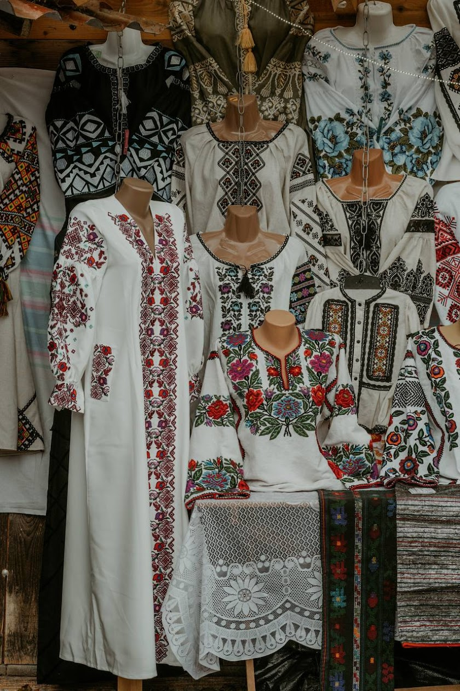
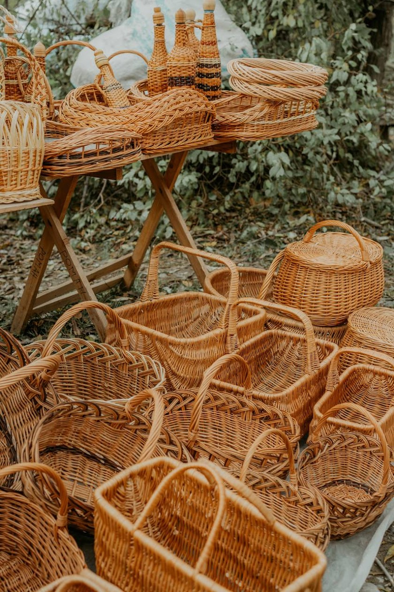
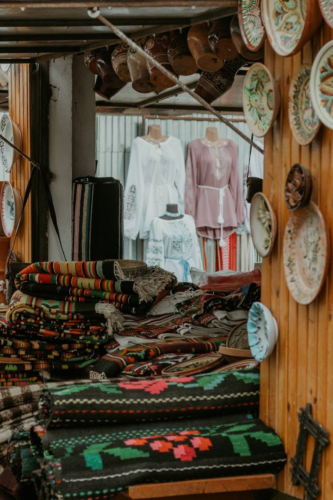

Гуцульський крам, автентична кераміка та неймовірні водоспади Шешор
Збираємося та вирушаємо до найбільшого гуцульського базару в Україні.
Гуцульський крам, вишиванки, кераміка, домашні сири (коники), вино, вироби з дерева та все те, що ви бачили у Яремче, Верховині чи на Синевирі - тут втричі дешевше 😅
Тут подають смачну каву у керамічних чашках ручної роботи! Є невеличка вітрина, щоб придбати кераміку, якщо Ви ще не купили її на базарі.
На вибір (а можна і усе встигнути): Косівський Гук, сучасний музей Гуцульщини, вулички з керамічним оздобленням, книгарня, і це все з видом на гори.
На завершення - їдемо до Сріблястих водоспадів. Верхній та Нижній Гук чекають на нас з неймовірними краєвидами!
Час на вечерю у місцевій колибі з автентичною гуцульською кухнею.
Повертаємося до Чернівців, сповнені незабутніх вражень та з повними сумками гуцульських скарбів.
Готові до незабутньої пригоди з шопінгом та водоспадами? Зв'яжіться з нами для бронювання!


